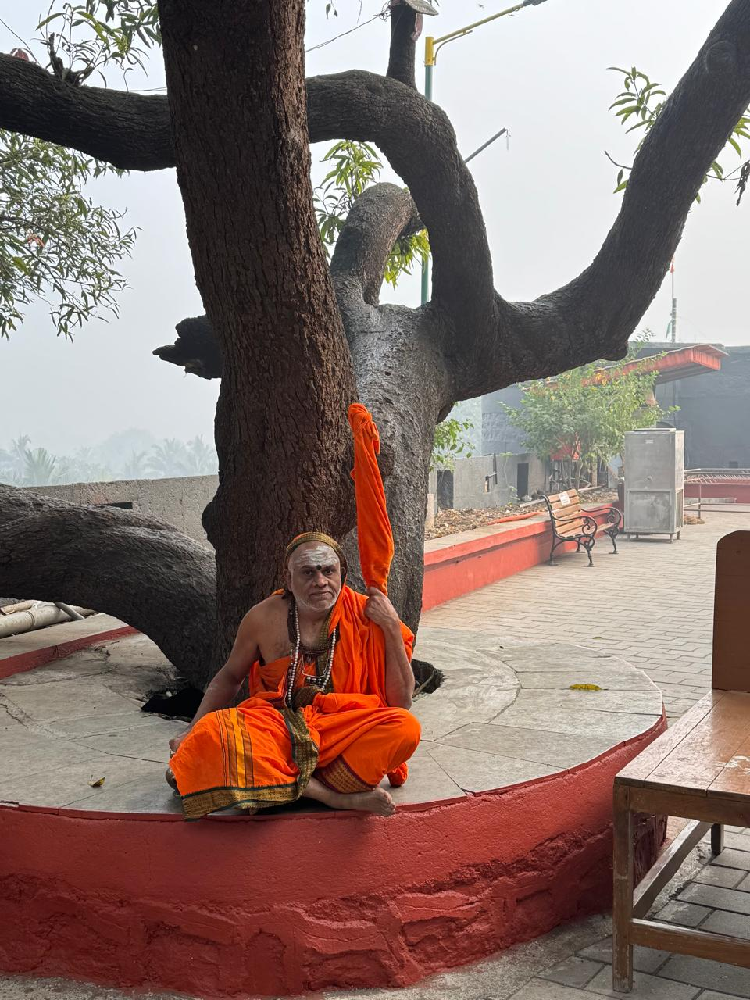
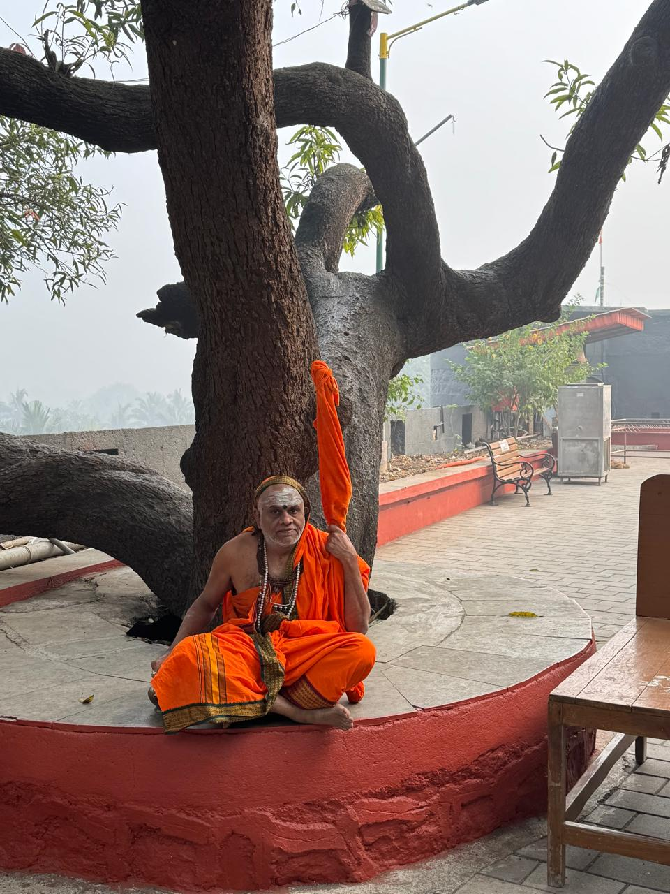

Ganeshpuri & Vajreshwari Temple Visit

On December 22, 2024, Guhai Swamiji embarked on a sacred journey to two significant spiritual destinations in Virar, Mumbai. The day began with a visit to the ancient Vajreshwari Temple, where Swamiji performed special pujas and blessed the gathered devotees.
Following this, Swamiji visited the Ganeshpuri Samadhi Temple of Guru Sri Nityanand Maharaj. Here, he conducted pujas and spent time in spiritual contemplation at this sacred site, which holds deep significance for spiritual seekers.


 
